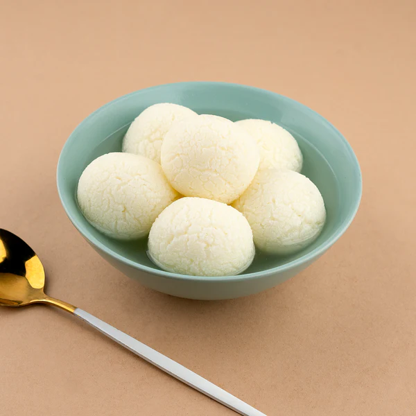

Rasgulla
Back to Homepage

Description
Rasgulla is a one of the famous sweet recipe in India popular for its sweerness and its sphere shaped appearance....!
Ingredients
- Milk
- Vinegar
- Sugar
- Rose Water
- Cardamom
Steps
- Boil the milk and add vinegar to it to curdle it.
- Strain the curdled milk using a muslin cloth to separate the whey.
- Knead the chenna (curdled milk) until smooth and make small balls.
- Boil sugar and water to make a syrup, then add the chenna balls.
- Cook until the balls expand and become spongy.
- Add rose water and cardamom for flavor.
- Let it cool and serve chilled.